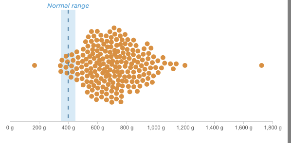

<%= await t.include("lib/_head.html") %>
<% if (COPY.labels.headline) { %>
<%= t.smarty(COPY.labels.headline) %>
<% } %>
<% if (COPY.labels.subhed) { %>
<%= t.smarty(COPY.labels.subhed) %>
<% } %>
Weight of left lungs
aria-label="<%- COPY.labels.screenreader %>"
<% } %>
>

Weight of right lungs
aria-label="<%- COPY.labels.screenreader %>"
<% } %>
>
<% if (COPY.labels.footnote) { %>
<% } %>
<% if ("data" in COPY) { %>
<% } %>
<%= await t.include("lib/_foot.html") %>